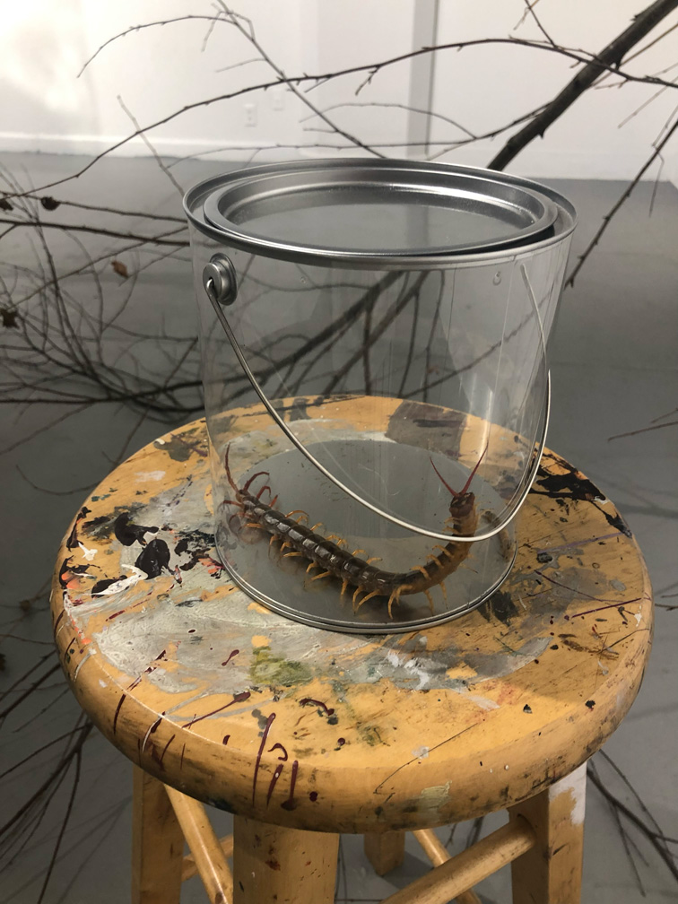
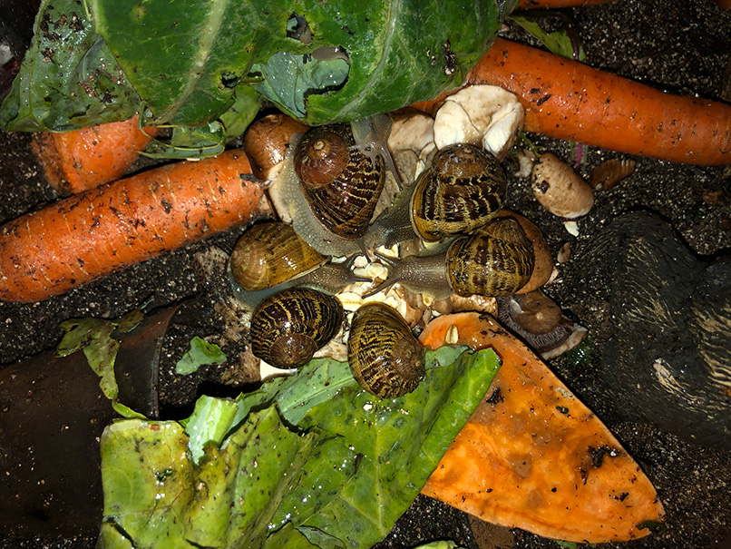
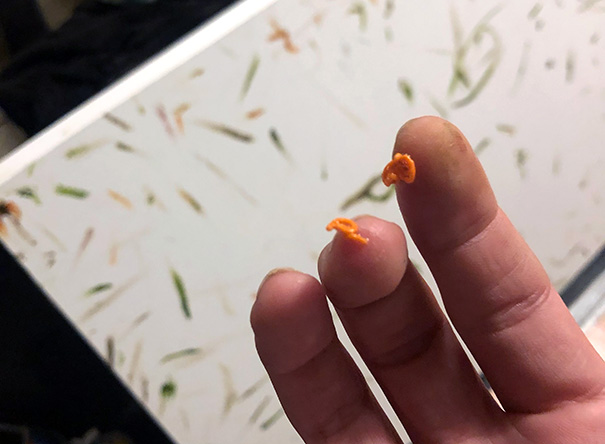
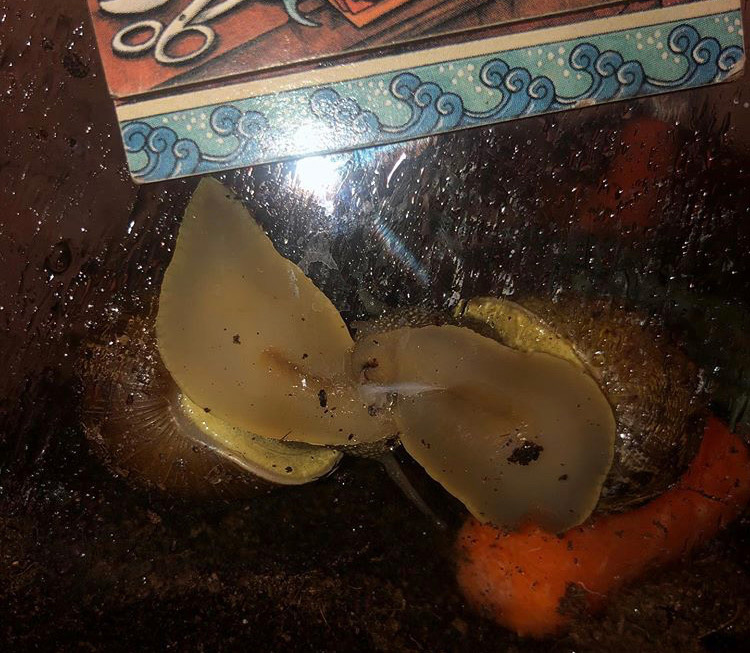
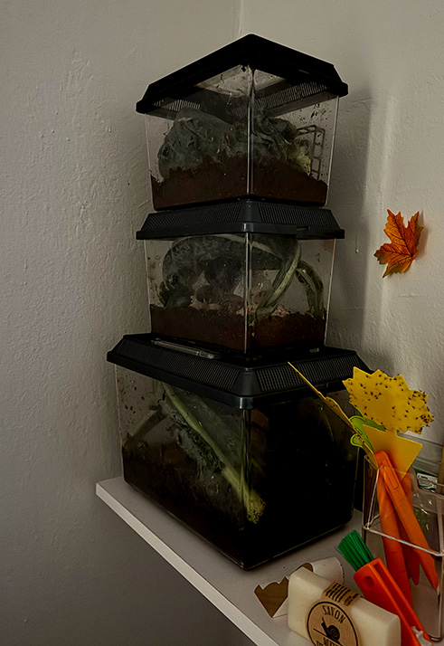

Notes on the Never-Ending Snail Breeding Project
This reflection examines the first six years of what will be a lifelong practice caring for and breeding common garden snails, Cornu aspersum. Given this project’s inchoate status, any written account is necessarily provisional. Accordingly, this text moves between factual summary and diaristic contemplation while embracing detours from the project’s stated intent. There is no fixed title for this project; a simple title would be Snail Breeding Project. Here I use Never‑Ending Snail Breeding Project, but I’m optimistic that, in time, many other titles will come.
Precursor
There are two past animal interactions that I find helpful for making sense of how this project came to be. In late 2018, during my final year of college, I purchased a giant Vietnamese centipede, Scolopendra subspinipes, through an online retailer. The animal was never named and its presence in my studio felt physically threatening bordering on regrettable. I can’t stress enough the speed it possessed. Immediately I worried it might escape during a feeding, disappearing in the pipes and giving a studiomate an excruciating and potentially lethal bite. As a precaution, I wore thick leather construction gloves and used stainless-steel aquarium tweezers to manipulate the fluffy coconut-husk substrate the centipede would burrow into.
Occasionally, the centipede was fed under questionable circumstances. Twice I sourced green anoles from a pet supply store in Elyria. The manager had me sign a document both times agreeing that the anoles would not be used to feed another animal. Within hours of each feeding, the centipede would leave behind a perfectly intact anole skeleton. I mounted one of these skeletons onto a board along with some other materials. Otherwise, I fed the centipede insects. On one occasion, the centipede itself was featured in a student exhibition. It was placed inside of a clear paint can on a stool in front of a tree I had cut down for observation by attendees. The maintenance and care of the centipede began to eclipse any other purpose I had envisioned for it in a way I did not yet fully understand. Much of this period consisted of observation. At times I felt like I was staring into a black hole. While on my way home to Los Angeles for the winter, the centipede died on the plane, marking an abrupt end to this particular exploration.
After this period with the centipede, I moved back in with my parents and prepared to buy a hatchling green anaconda, Eunectes murinus, from a breeder I had been following online named Meghan Kelley. Meghan came to my attention via a breeding project I was particularly interested in at the time, the Reach Out Reptiles Super Dwarf Reticulated Python project. I admired the project’s goal, to create a miniature, chihuahua-like version of the world’s longest snake species, the reticulated python, Malayopython reticulatus—. The Reach Out Reptiles founder had collected a few of her anacondas. I put down the deposit and purchased the necessary starting materials: heat pads, a bespoke drawer-like snake enclosure, lighting, troughs. There was an exotic pet exposition in Anaheim where we planned the pickup. My priority in owning the snake was to create a sculpture using a non-functional but water-filled toilet with the female green anaconda’s complete defecation inside. This would be installed near the far wall of a space, with the other walls hosting mounted containers of various morphs of live baby snakes, each paired with a customized Starbucks drink. For example, a tall Pumpkin Cream Cold Brew with no ice, extra foam, and an extra shot of espresso paired with a baby rainbow boa, Epicrates cenchria, expressing an incomplete dominant Picasso Stripe gene.
The sex specificity of the green anaconda hatchling I was going to buy put enormous pressure on the project, as the females are significantly larger than the males. I would also have to wait for the anaconda to reach sexual maturity, another constraint of the sculpture. Once the project was complete, the ten to twenty year logistical nightmare of owning the giant snake was supposed to “figure itself out.” I was embarking on a kind of protracted suicide. On the freeway to Anaheim to pick up my selected anaconda, I texted the breeder that I was no longer interested, giving up my deposit and shelving the project.
Snails
Abandoning the anaconda coincided with the unplanned acquisition of the basal population of Never-Ending Snail Breeding Project garden snails. I removed nine snails from a friend’s backyard in Encino, which his parents had just begun to treat with poison. This decision, if you could call it that, was made after an extended period spent with them in one large planter, flipping over leaves revealing tens of snails of different sizes and stages of their life cycle, incredibly small, small, medium, extra large. Snails are a banal enough animal, but one you see just infrequently enough for them to surprise when given a second glance. On this night in particular I was very overtaken by my impression of the garden snail. They attracted a strange kind of gazing. At the time, I was trying to move away from using the animals I was buying to make artworks and focus more on their care and observation. My feelings toward either approach remain unresolved and contradictory. Not realizing what was to come, I took the snails’ scheduled demise as a sign and left my friend’s house with nine snails in hand. The project began.
A few things about the snails captivated me. They move faster than their eponymous pace suggests, and remarkably fast for their mode of locomotion. These snails’ shells were almost indistinguishable—I could pick out the darkest and lightest ones, maybe one that had been cracked and healed, but that was it. My first impulse was to train my eye to notice more subtle differences between the shells; in subsequent years, the shells have shown unexpected emergent properties. These will be touched on shortly.
Snail digestion has outlasted some of my other early fascinations. Snails and other gastropods consume their food with an organ called a radula, which is covered in tooth-like structures that scrape up flecks of food and move them to the esophagus. While their method of digestion resembles that of most animals, snails alone produce cellulases, enzymes usually observed in fungi and bacteria, to break down plant matter. Though still a subject of debate, snails seem to produce these enzymes themselves rather than employ gut flora, as snail guts mostly contain microorganisms already present in the soil likely acquired through ingestion. I was taken by this detail, and inspection of the snail feces revealed something else unique. The vegetal matter snails consume is minimally altered in digestion—the scraped flecks are held together in a transparent mucus, preserving the original pigmentation of the food. Their defecation resembled a kind of high resolution paint out of the tube.
It was clear within the first few days with the snails that they were the point of convergence for several interests and strategies I was exploring during this period. I sensed this would be a lifelong engagement, and that this resembled the point. Bonsai was one of these parallel interests. Yamadori in particular, which involves transplanting a naturally crippled tree from a mountainside or similar terrain to use as a bonsai starter, felt serendipitously close to the project I had set out on. Bonsai regularly outlive their owners, who pass their trees down for generations. The snail project was in part modeled after this tradition: maintaining an unbroken generational lineage of snails to be cared for indefinitely.
As a result of the project’s immense scale, I’ve time and time again contradicted some of my most basic feelings about how Never-Ending Snail Breeding Project is related to art—on occasion feeling it had nothing at all to do with art—and often wondered what exactly I was doing. In 2020, TikTok became a central venue for publicly sharing the snails as snail feces became a primary material produced in overwhelming volume by the project. The action of applying this substance to canvases, paper, and sculpture using my fingers was recorded in 15-30 second videos. A few of these videos still exist.
As previously mentioned, the colorful defecation mystified me. Since the beginning, the snails’ diet has primarily consisted of dark leafy greens and carrots, along with the usual supplement of cuttlefish “bone.” These foods produce a deep green and radiant orange in the defecation. The orange pigment in particular fades within days of drying out. No effort was made to prevent the deterioration of these pigments. Both artistic practice and indirect promotion, this profile building on TikTok and other platforms may have briefly contributed to the project’s visibility, though the people paying attention had little to no context to understand what they were seeing.
Concurrently, a practice of naming and photographing individual snails emerged as part of a broader attempt to recognize and document subtle variations. This practice also involved recording shell measurements taken with a caliper, but was eventually dropped along with attempts at rendering digital and analog portraits to record the details of my observation. The goal of identifying unique traits among the snails has waned almost completely from the project by now, but will be taken up again moving forward. Pairings of orange and green persist as a motif of the project, as does use of snail defecation.
Snails reproduce frequently, laying between 40-80 eggs beneath the soil. If this cycle were to continue unchecked, the quality of life of any given contained snail population would plummet. As a result, most snail hobbyists are forced to cull, or selectively slaughter, the snail offspring. This is usually an opportunity to select certain traits and reject others, such as color, size, and general ability to stay alive. Due to the unusual circumstances of Never-Ending Snail Breeding Project, I have never been sure what exactly to actively select for. Regardless, slaughtering countless baby snails is my reality, and I usually achieve this by throwing them out my window. My tendency is to let more than I should survive. At times there are multiple egg clutches visible beneath the soil, which gives me an opportunity to randomly select and destroy. On multiple occasions I’ve tasted this snail caviar, milky pearlescent eggs that, once cleaned of any dirt, taste farinaceous, earthy and rich. Some friends have suggested that snail farming specifically to produce caviar should be one of the aims of the project, but I don’t have the space or really the desire to do so.
A new layer of meaning emerged as I realized the snails’ shells function as physical records of their care and neglect. Analogous to geological strata or ice core samples, each shell offers a material archive containing potentially interpretable information about the state of contemporary art practice at large and my personal habits specifically. These habits have swung in the direction of neglect for extended periods. In 2021, while I was on an international tour as part of the Whistlegraph artist group, the snails survived in my studio for a month without care. But the evidence of my neglect was obvious and permanent for this population, with almost every still-developing snail exhibiting at least one gnarled growth line of neglect. Many snails have died over the years, and I’ve taken care to preserve their shells. This has felt less important more recently. Some of these shells have been used as painting supports in and of themselves, painted, for example, to resemble simple chameleon heads or in a monochrome brown or grey. I’m confused by these snail-induced artworks, and feel that acknowledging them here may give them unwarranted attention. But this is a marathon, not a sprint, and these are the realities of the project.
A brief image that explains my mindset during this time, roughly 2020-2022. My primary focus was daily practice with my collaborators in Whistlegraph, which pulled my attention away from the snails. As a result of this new responsibility, the snails frequently took the backseat. A recurring dream during this time involved encountering vast towers of terrariums, dirty and stinking, abandoned for what seemed like years in awful, dark rooms. I’d peer into these terrariums and see, to my horror, that the small animals inside were somehow still—just barely—alive.
Alien Hybrid Monsters
The furthest reaching vision for Never-Ending Snail Breeding Project projects a vast horizon of biological speculation. I am nurturing the potential for genetic transformation through selective breeding and neglectful care, with the goal of hybridizing these snails with other mollusk species, particularly cephalopods like cuttlefish or octopi, aiming to produce an intelligent mosaic life form capable of novel cross-species communication. Future additions of other genetic materials—extraterrestrial or otherwise, depending on what discoveries are made over the next million years—are welcome. Initially framing the project as an “ambient mutation tank,” and casually irradiating the snails with ionizing waves from bananas and cosmic rays, I’ve since doubled down on the project’s mutative aims. During public presentations of the snails at the San Francisco Art Book Fair and Decentralized Web Camp, I discussed the slow mutation of the lineage in my studio, and felt that the subject had been sufficiently teased out. But after these lectures, I became fixated on hybridizing the snails and creating a new animal, guiding all changes within the genome I was nurturing towards this goal. Around this period, the project came to resemble an unfundable analog artificial intelligence startup with only a vague utility in mind.
This hybrid monster would exhibit a unique intelligence enabling communication unlike anything currently observed in human to non-human communications. The evolutionary gap between vertebrates and invertebrates would be bridged through these charismatic new invertebrate representatives. I do believe in the creative transformation of life itself, not towards a Caligarian anthropomorphization of everything but rather towards a fundamental desire for greater humility, difference and complexity. Not via the creation of, to use a contemporary example, a hyperproductive artificial intelligence limited by our knowledge until it naturally escapes that, but a creature with that escape as the aim. An actively collaborative, mutualistic symbiosis. I may be too attached to the monstrous description, as I neither imagine nor desire this species to be a disharmonic chimera. I prefer not to imprison this creature within the limits of my imagination. I’m trying to respect morphological designs I could never fathom in their emergence—to allow them to express themselves. When I use the term “monster,” I am borrowing it to describe the product of a truly creative and courageous play with the materials of life itself. If the snails are to be a path towards creating a new form of life through contemporary methods, the project will likely require the efforts and funds of multiple parties. But making the poetic case comes first.
A Conclusion
My lifetime with the snails will not coincide with the artwork the project seeks to realize. Even if that artwork is the alien hybrid monster, only over millions of years, if this lineage of snails remains unbroken through speciation or hybridization, would a point or points along this population’s evolutionary gradient become self-evident as an artwork. By this far-off future point, even if it comes within the next 10,000 years, “art” may be an anachronistic term. Our own species will have transformed into something else. It becomes unimaginable, beyond speculation. But the most crucial qualities of art will surely persist, its extra-dimensional qualities perceptible by an audience we don’t have the framework, let alone the words, to describe. Whatever it is that replaces art might ring at the same frequency we’ve come to associate with what’s most crucially important about art. I must stress that this recurring vision is as susceptible to transformation as the genetic information of the snails themselves during the life of this project. Had I written this a year or two ago, I would have insisted I had no clear agenda in sight, that to force an agenda on this project would destroy it. Never-Ending Snail Breeding Project will exist for so long that it will outlive the many things I’ve thought about it over the years, including what I may think is its critical purchase in this text. Choosing a goal is as easy as writing it down, and keeping these snails alive is what concerns me most. Another goal will likely reveal itself in time.
I’m in my sixth year of breeding these snails over what is now surely the 13th or 14th or 15th or 16th (?) generation. Their rapid reproduction means that a few months of relative detachment from the project can confuse generation counting. There are still times I walk into my studio and expect them all to be dead. I am a terrible snail owner. There are periods of boredom with the project followed by focused observation and maintenance. The snails have moved between California, Oregon, and New York. When preparing to move them to New York, I decreased the population by tossing many of the snails in gardens and yards in my Los Angeles neighborhood as a sort of insurance in the event of a total die-off. I’d like to think that any snail I may find in those spots contains some genetic continuity with the original lineage.
Improvements can be made. At this point the rampant incest must be curtailed. I’ve recently introduced a snail purchased from outside of the project to increase genetic diversity. And simultaneously, I could fork off specifically selected couples in reproduction tanks to begin the process of selecting for specific traits. These traits may be determined for reasons somewhat arbitrary (shell color, shape, pattern) or for their utility ensuring snail survival in the project (shell thickness, snail size, tolerance for dehydration). I’d also like to provide the snails with more space in the coming years. Close quarters can decrease snail activity due to constant interaction with one another’s mucus trails. The plan is to design a circular dish the size of a washing machine window or larger in which a mound of clay-abundant, sand-heavy soil and rock can be sculpted, with a breeding mote of softer substrate around the perimeter. A large acrylic cloche with a handle could be used to cover this mound.
Ultimately, while extensive textual reflections and conceptual tangents remain secondary to the breeding and care practice, they serve an essential role in maintaining the project's visibility and interest over potentially vast timescales. These written records may prove crucial in securing future engagement and funding, ensuring the project’s continuity and its potential transformation across generations. There is a possibility of this.
Updated · Jan 06 2026